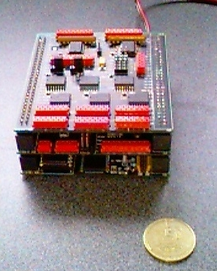

RoboCubeThe Robocube has been designed from 1997-2000 at the VUB AI Lab by Dr. Thomas Walle It is currently used by some research groups including the RIDS (Roboter in der Schule) project and the IUB Robotics group Robocube's Operating System ''CubeOS'' can be found here |
|
| One main goal of the architecture is to allow the on-board implementation of as many robot behaviors as possible. Therefore, RoboCube provides quite some computation power and memory within the space-constraints. In addition, RoboCube is layed out to deal with various sensors and motors, radio-communication, and the option of high-resolution on-board vision. |  |
Main features
|
RoboCube Version 2.0Currently, we are working on a new version of the RoboCube platform. New features include:
The embedding of the DUART and the two I2C busmaster chips allows a much higher CPU frequency, i.e. 25MHz. Additionally, 16 direct memory mapped binary outputs could be inserted. On top of that, an additional board was designed. It hosts a MC68882 FPU chip running at 25MHz and implements 16MB of DRAM. Since the whole physical address space is 16MB, only 13MB are accessible. Again, the pdf sources of the used components can be retrieved here and the schematics can be seen here. |